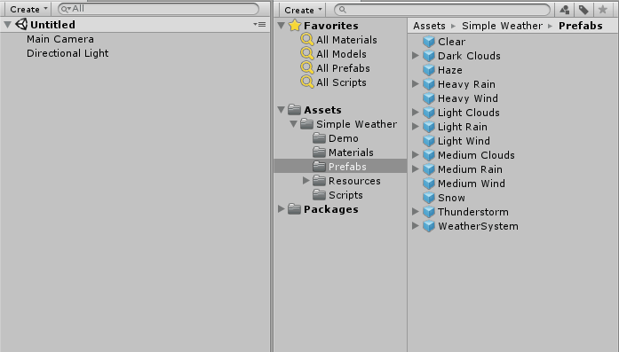
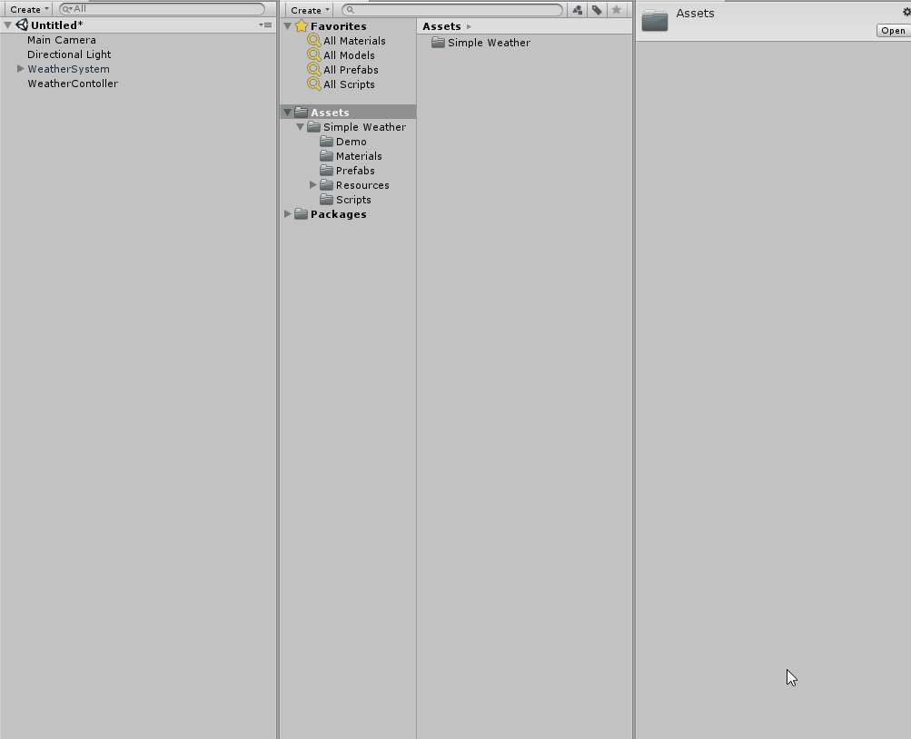

Getting Started
Using the Real Weather system follows these easy steps:- Install the asset from the Asset Store
- Add a WeatherSystem to your scene
- Calling the API with your choice of weather condidtions
- Calling the clear API to stop the weather
Adding a WeatherSystem to your scene
Once the asset is installed into your project, you can drag and drop a WeatherSystem into your scene. The WeatherSystem prefab is located in Simple Weather > Prefabs.
Calling the API
Calling the API is very simple. Every weather type has it's own function you can call. There are 6 weather functions to choose from. The 6 weather funtions are:
- startRain()
- startSnow()
- startHaze()
- startClouds()
- startThunder()
- clear()

Implemeting your WeatherSystem
First create a WeatherController. This is the GameObject that holds the script which we will use to make API calls and turn weather elements on and off. To control the weather system make a basic script. Copy and paste the code below into a new script called Weather. In the script, define a variable called WS of the type WeatherSystem, and make it public. Then in the start function, call the startSnow function. When you run this basic scene you should see snow begin to fall.

//Turning on Snow
using UnityEngine;
public class Weather : MonoBehaviour {
public WeatherSystem WS;
void Start () {
WS.startSnow();
}
}